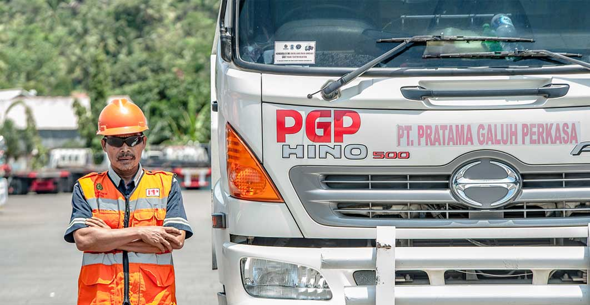

Home
Didirikan pada tahun 1998 oleh para ahli dibidangnya dengan pengalaman puluhan tahun. Pt Pratama Galuh Perkasa menawarkan serangkaian solusi dibidang transportasi dan ekspeditur.
selama bertahun-tahun, pertumbuhan perusahaan didorong oleh karaktersistik dan kebutuhan unik dari pelanggan kami. dari perusahaan swasta hingga BUMN, dengan menganalisis dan memahami berbagai skala ukuran kompleksitas kami dapat menegmbangkan dan memperluas kompetensi kami untuk memberikan solusi yang kuat dan efektif. kami terus belajar dari praktik terbaik pelanggan untuk memenuhi tujuan pertumbuhan pelanggan kami